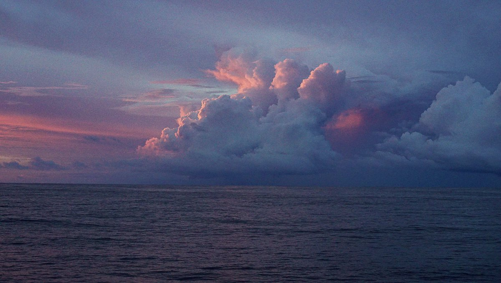

sailing
- slow and steady
- navigation
- no schedules
- ground tackle
- weather forecasts
- radio
- camaraderie
- night time
- eliminating electricity
- seasickness
- offshore sailing
- Boat repair
- Knots
- Costs
- How to read the sky
- Barometer
- Beaufort Scale
slow and steady

If you can do the same speed with less sail, do it. As soon as you think of reefing down, do it. Should we reduce sails? Yes, always yes.
Shaking out a reef is easier than putting one in in high winds.
navigation
The entire task of navigation rests upon the Navionics app, installed onto all of our mobile devices. Its depth maps, compass, GPS, waypoints, community edits, and more, are all the features that we could ever wish for to get from A to B, over water. We use it along with a separate AIS app for traffic.
no schedules
Sailing with a schedule is a recipe for disaster, too many things can happen on a boat and arriving on a precise date can be difficult. Making plans will make you do bad decisions, leaving in bad weather to make a meeting for instance, can be dangerous. Sail with the weather, not against it.
ground tackle

We carry 3 anchors onboard. We have a Bruce 10 kg, and a Rocna 10 kg and 15 kg. Some will argue that bigger is better, but in our experience the quality and shape of the anchor, as well as your scope makes all the difference. If you want to upsize, your bow roller may need replacing, and in the event of windlass breakage, heaving it up by hand could be next to impossible. We have extra lengths of chain and rope.
We carry 30.5m of chain on Pino, with 61m of 3-strand nylon. This means that we anchor safely in waters no deeper than 11m, we have found plenty of anchorages in the South Pacific in that depth range.
weather forecasts
Our favourite weather service is Windy, and while underway, we download weather maps(.grb files) through the saildocs service with our Satellite Phone which we then process with PredictWind. We pick our weather carefully on passage, no sense in taking unnecessary risks.
For information on storms brewing in the Pacific and Atlantic, as well as passage advice in the South Pacific, we enjoy reading MetBob.
radio
As a sailor, you must offer help to a boat in trouble. Radio communication is key, specific channels are used in every country for emergencies or information exchange. Every morning, sailors will tune in to a specific channel and listen to a morning net, a public radio exchange in which the weather and local events are announced, as well as boats seeking crew, or items that need to be sold or found. When the weather is foul, the local channels are very busy.
camaraderie

There is an unspoken understanding between sailors, an exchange of looks when foul weather is amidst. Every member of the sailing community knows the difficulties of life at sea, and is ready to lend a hand. We refer to each other by boat name, and like bird-watchers, we can identify rare breeds by sight. When transiting through world routes, we meet the same boats often, thus strenghtening the connection.
night time
During long passages, we must sail throughout the nights. Our pattern, for two crew, is one sleeps between 1900 and 2100, then sails between 2100 and 2400, then goes back to sleep from 2400 until 300, and then goes back to the wheel between 300 and 600.
During these long nights, we listen to countless podcasts and audiobooks, which we discuss around breakfast in the morning. If we're feeling especially tired, listening to upbeat music, as opposed to spoken content helps.
During long passages, our daytime sailing occupations include: cooking, cleaning, doing fixes on the boat and brainstorming on future projects. We don't have a tight schedule for day watches, we hand the wheel to the other as we get tired.
eliminating electricity
Our aim is to have as few items as possible on board that demand power. More power means more batteries, solar panels, wiring and devices that are sensitive to salt.
seasickness
Here's a few of our tricks against seasickness.
- Don't drink alcohol or coffee the day before leaving.
- Eat before you're hungry.
- Rest before you're tired.
- Don't let yourself get cold.
- If everything else fails, take the helm.
offshore sailing
Here's a few quick tips for offshore sailing.
- Anything on deck is sacrificial.
- In heavy winds, heave-to, don't run.
- When tired, heave-to, don't push too hard.
- Learn how to self-steer without external devices.
- Buy a good set of oil skins.
- In the cold, wear wool, not synthetics.
- Store main anchor below decks.
- Secure all floorboards and doors.
Boat repair
Here's a few quick tips for boat repair and upkeep.
- Stop leaky chainplates with butyl tape.
- Coat structural plywood with fibreglass and resin to prevent rot.
- More to come soon...
Knots
Knots to learn to tie behind your back:
- The square knot
- The sheet bend
- The round turn
- The half hitch
- The rolling hitch
- The bowline
winter
Living aboard in areas with hard winters is tricky, especially if your boat is not insulated. Condensation in lockers can damage wood, and cause rot and mold. To keep the interior dry, it's necessary to get rid of the moisture generated by cooking and breathing. To dry the space out you need to allow air from outside into the cabin, and then heat it. The heat won't stay if your boat isn't insulated, but winter isn't the time to add insulation, it's better to wait for a drier, warmer season. If you try and use adhesives in cold weather, materials won't bond to the hull.
In winter, we sleep in the saloon and close off both the v-berth and quarter berth (with heavy curtains). It is easier to heat a smaller space. For outside lockers, insulating the walls they share with the main cabin (if any) and leaving them cold is the best option to prevent condensation.
When we cook, we crack open a hatch to allow the steam to escape. We don't have room for a fan so this is our best option.
Hull. The best hull insulator is closed-cell foam that is bonded to the bare hull using self-adhesive or contact cement. Insulation must be sealed. Other options include a Reflectix and polyethelene foam sandwich (reflectix > polyethelene > reflectix) with each layers held in place with polyurethane caulk.
Bilge and floor. For the bilge area, keep it dry and cover the floors with carpet as insulation.
Mast. As is, our keel-stepped mast is a huge heat sink. It's a good idea to insulate it by wrapping it with reflectix, even if it is unsightly. The Frugal Mariner covered theirs with a layer of flanel-backed vynil, attached with velcro.
Windows: The windows on our boat are another source of heat sink. In the saloon, we have six 8 mm acrylic windows. We have plans to install a layer of thin plexiglass on the inside with an air space between it and the acrylic for insulation. The plexiglass would sit over an epoxied wood frame, onto which we can slide curtains for added shielding from both the cold and curious dock neighbors.
costs
Living aboard
Living aboard your boat will cause wear from regular use of the space. Wear inside the cabin include loss of varnish on floors and counters, and from regular usage of cushions, the galley and the head. A head that is used everyday will suffer accumulations of calcium, cleaning out the pipes with vinegar/baking soda is a must. A failure to do this, means clogged pipes and having to clean them out manually, we have done this, and it was horrible. The joker valve in heads are a common breaking point, as are macerators and other devices or piping in contact with salt water.
This goes on top of regular spendings on maintenance, the cost of which varies depending on the size, material and age of the boat. If staying at a marina in your home country for long periods, paying for liveaboard fees (up to $150 extra per month) is necessary. If staying in a marina in a foreign country, liveaboard fees are often waived. Some marinas charge for electricity and water, be sure to take that into account, especially if you have plans to winter there and that your heating is electric. In winter, marinas charge less than in the high season. For example, the city docks in Victoria costs us 570$ a month in winter, and summer rates are about $880S.
Going offshore
Traveling offshore costs more because the boat is under more stress. Repair and maintenance can cost between $500-800 per year for a 10 m yacht like ours. This price goes up and down depending on where we go, and what has to be replaced that year. In 2018 while in New Zealand, we spent around $10k on Pino to get it ready for Japan and the subsequent trip to Canada. This was the most we'd spent in a year, and was due to the purchase of a new AIS system, mainsail, throttle cables, replacement windows, top hatch, galley plumbing, replacement batteries and solar panels. Our first year was also expensive, because the boat was not outfitted for sailing offshore, we had to buy lifejackets, jacklines, a drogue, extra lines, shackles, a med-kit, extra tools, a location device, a handheld VHF, a SAT phone, foul-weather gear, engine spares etc..
Moorage
Living at anchor, that is, in a bay somewhere tethered to the earth with ground tackle is free. Some bays will have moorings installed that you can tie to for a small fee (often around $10-15.)
Marinas often have guest docks with power, WiFi and showers, for a medium-to-high cost ($300-$800.) The longer the boat though, the bigger the cost. Some marinas charge per dock space rather than boat size, beware of these places. Moorage near cities is more expensive, and the price goes up during the high season (summer). Winter moorage is generally much cheaper.
Paying for annual moorage is a good idea, but keeping a boat in a marina means getting liability insurance, which in turn, means you'll need a survey, resulting in a seemingly interminable domino effect which can incur many more costs. Depending on the age of your boat, and when it was last surveyed (if ever), you may need a full condition out-of-water survey. This means paying a marina to lift your boat out, and paying the surveyor. A surveyor will point out mandatory items that need fixing and/or replacing, if these items are not complied with within 60 days the insurance will be void.
Living at anchor is the cheap way to go, although getting good ground tackle (rode and anchor) is important to keep you and your boat safe. Invest in a good dinghy too, to get you from ship to shore.
Maintenance
Doing maintenance and repairs yourself will bring the cost down. Offloading work to professionals, if you can afford it, is fine, but it's good to know how to take care of your boat because you may not always have access to workers if sailing to far-flung islands. Modern-built boats require less maintenance work than say, wooden boats. A failure to maintain items regularly will cost more later. Typical maintenance jobs include:
- Engine(s)
- The boat’s hull (bottom) & topsides, electrical systems
- Electrical systems
- Plumbing
- Moving parts (hinges, tracks and zippers)
- Canvas and upholstery
Tasks like hauling-out (to get the bottom painted) doesn't happen every year (once every 2-3 years for an offshore boat). We use ablative anti-fouling which costs about $250 to paint a 10 m yacht. If you coat your prop with prop speed (to slow growth on it) you'll pay an additional $200. Yard fees vary from place to place, those closer to large cities will cost more. In New Zealand, it cost us $420 total, including bottom rinse, haul in and out and days to stay on the hard. While in Japan, it was about double that price for half the time spent on the hard.
Some years will cost more than others, as gear wears out, if hardware or lines need replacing. When doing repairs, use quality materials and products, research them thoroughly before a project instead of relying on brand names.
Engine
Engines require spare parts, like oil ($25) and fuel filters ($10), they should be replaced 250 hours (300 hours on some models) or once per year, whichever is sooner. Our engine has two fuel filters, a secondary and primary. Other items that need to be replaced periodically include: water pump impellers ($40), water pump and alternator belt (15-$20), zincs (inside engine, $8 each), shaft zinc ($16 each) etc.
Safety
Safety gear will last you many years if serviced regularly. Pyrotechnic signaling devices (including aerial flares and hand held signals) expire 42 months after the date of manufacture in accordance with the Coast Guard requirements. Typically, this means that you must replace your flares every three boating seasons. Aerial flares cost $75 per pack of 6 (in Canada), for a boat our size (10 m) we need to have 12 aboard.
Life jackets and life rafts need to be serviced every 3 years, as the auto-inflating canisters need testing, and replacing. Replacement cartridges for auto-inflating PFD's cost about $35 (again, in Canada). If planning to travel for many years out of the country, carry replacement cartridges onboard, because other countries may not carry the ones required by your model and that replacements can't be shipped by air (they're pressurized). Re-packing a liferaft is very expensive, and varies depending on the model, and your location in the world.
How to read the sky
When reading the weather on a passage, don't rely solely on weather reports. Learn to read the weather with books, and by observing, and studying the sky.

“When clouds appear like rocks and towers, the Earth’s refreshed with frequent showers.”
Anvil top cloud: Named for their likeness to an iron anvil, anvil clouds are the icy upper portions of cumulonimbus thunderstorm clouds that are caused by a rising of air in the lower portions of the atmosphere. When the rising air reaches 40,000-60,000 or more feet, it tends to spread out in a characteristic anvil shape. Generally, the taller the cumulonimbus cloud, the more severe the storm will be.
The anvil top of a cumulonimbus cloud is actually caused by it hitting the top of the stratosphere—the second layer of the atmosphere. Since this layer acts as a "cap" to convection (the cooler temperatures at its top discourage thunderstorms (convection), the tops of storm clouds have nowhere to go but spread outward.
At sea, keep your eyes on the clouds. If you notice a cumulonimbus cloud with an anvil top cloud forming, and that it is pointing toward you, reef your sails, as the weather could get very nasty. If the wind is strong, the anvil will sheer off in the direction the wind is blowing.
"A ring around the sun or moon, means that rain will come real soon.”
A ring around the moon: A halo forming around the sun, or moon, is caused by the refraction of sunlight, or moonlight, by ice crystals in high altitudes. Moisture forming at such heights is indicative that is moving downwards, and that an active weather system is coming.
“Mackerel skies and mares’ tails, make tall ships carry low sails.”
Cirrocumulus clouds: Cirrocumulus clouds, or 'mare's tales' and 'mackerel scales', indicate an approaching warm front, with veering winds (clocking around from NE and E over to SW and W) with rain.
Red sky at night: In the northern hemisphere, as the sun sets, light shines through the lower atmosphere which is full of dust, salt, smoke and pollution. The particles scatter the shorter wavelengths of light at the blue end of the spectrum, leaving only the longer wavelengths (at the red end of the spectrum) to shine through. In a high-pressure area, air sinks and holds air contaminants near the earth, making the sunset even more red.
Red sky in the morning: A red sky in the eastern morning sky, occurs for the same reasons as a red sky at night, but then the high pressure region has already passed from West to East, and may indicate an area of low pressure is coming. Low pressure systems bring clouds, rain and storms.
Other indicators of deteriorating weather:
- Reduction in visibility
- Direction of wind, shifting from N > E, or from E > S (cold front).
- Clouds moving in different direction, at different heights indicate shifting winds and approaching storm fronts.
- Cumulus begin to develop vertically and darken
- Sky is dark and threatening to the West.
- Clouds increasing in numbers, moving rapidly across the sky.
Indicators of impending strong winds:
- Yellow sunset
- Light, scattered clouds alone in a clear sky
- Sharp, clearly defined edges to clouds
- Unusually bright stars
- Major changes in the temperature
Indicators of impeding precipitation:
- Distant objects seem to stand above the horizon
- Sounds are very clear and can be heard for great distances
- Transparent veil-like cirrus clouds thicken, ceiling lowers
- Hazy and sticky air. Rain may occur in 18-36 hours
- Halo around the sun or moon
- Increasing South wind with clouds moving from the West
- Wind (especially North wind) shifting to West and then South
- Steadily falling barometer
- Pale sunset
- Red sky to the West at dawn
- No dew after a hot day
Indicators of continuing fair weather:
- Early morning fog that clears
- Gentle wind from the West or Northwest
- Barometer steady or rising slightly
- Red sky to East with clear sky to the West at sunset
- Bright moon and light breeze at night
- Heavy dew or frost.
- Clear blue morning sky to West
- Clouds dot the afternoon summer sky
Indicators of clearing weather:
- Cloud bases rise
- Smoke from stacks rise
- Wind shifts to West, especially from East through South
- Barometer rises quickly
- A cold front has passed in the past 4 to 7 hours
- Gray early morning sky shows signs of clearing
- Morning fog or dew
- Rain stopping and clouds breaking away at sunset
Source: Indicators of weather courtesy of The Frugal Mariner (Larry and Susan Macdonald). Their wonderful website came offline this year (2020), and we've retrieved some of the content using Wayback Machine.
barometer

“When the glass falls low, prepare for a blow; when the glass is high, let your kites fly.”
A good barometer is a lifesaver on a boat. At sea, record the barometer readings every hour. If you see any sudden changes, this is telling of a change in weather. The larger the barometric change, the more extreme the weather change.
Aneroid barometers: Inside an aneroid barometer (aneroid = without fluid) is a small capsule. This capsule has had the air pumped out of it. When the air pressure rises, the sides of the capsule are compressed. The capsule is attached to levers which move a needle as the air pressure squeezes the capsule. A dial behind the needle tells you the air pressure and altitude or weather forecast. They are less accurate than mercurial barometers.
Wonder if your barometer is working? You can find out using a plastic bag. The idea is that if you seal it in with a pocket of air, and press on the bag, if the unit isn't faulty, the needle will move clock-wise as the pressure within the bag changes.
Beaufort scale
The Beaufort Scale of Wind Force was developed in 1805 by Admiral Sir Francis Beaufort as a means for sailors to gauge wind speeds through visual observations of the sea state.
The scale runs from Force 0 (calm) to Force 12 (Hurricane).
| Force | Wind (Knots) | Classification | Wind Effect |
|---|---|---|---|
| 0 | <1 | Calm | Sea surface smooth and mirror-like. |
| 1 | 1-3 | Calm | Scaly ripples, no foam crests. |
| 2 | 4-6 | Light Breeze | Small wavelets, crests glassy, no breaking. |
| 3 | 7-10 | Gentle Breeze | Large wavelets, crests begin to break, scattered whitecaps. |
| 4 | 11-16 | Moderate Breeze | Small waves 1-4 ft. becoming longer, numerous whitecaps. |
| 5 | 17-21 | Fresh Breeze | Moderate waves 4-8 ft taking longer form, many whitecaps, some spray. |
| 6 | 22-27 | Strong Breeze | Larger waves 8-13 ft, whitecaps common, more spray. |
| 7 | 28-33 | Near Gale | Sea heaps up, waves 13-20 ft, white foam streaks off breakers. |
| 8 | 34-40 | Gale | Moderately high (13-20 ft) waves of greater length, edges of crests begin to break into spindrift, foam blown in streaks. |
| 9 | 41-47 | Strong Gale | High waves (20 ft), sea begins to roll, dense streaks of foam, spray may reduce visibility. |
| 10 | 48-55 | Storm | Very high waves (20-30 ft) with overhanging crests, sea white with densely blown foam, heavy rolling, lowered visibility. |
| 11 | 56-63 | Violent Storm | Exceptionally high (30-45 ft) waves, foam patches cover sea, visibility more reduced. |
| 12 | 64+ | Hurricane | Air filled with foam, waves over 45 ft, sea completely white with driving spray, visibility greatly reduced. |